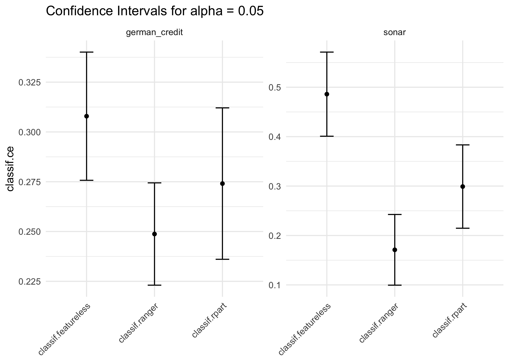

Methods for statistical inference on generalization error.
Installation
pak::pkg_install("mlr-org/mlr3inferr")What is mlr3inferr?
The main purpose of the package is to allow to obtain confidence intervals for the generalization error for a number of resampling methods. Below, we evaluate a decision tree on the sonar task using a holdout resampling and obtain a confidence interval for the generalization error. This is achieved using the msr("ci.holdout") measure, to which we pass another mlr3::Measure that determines the loss function.
library(mlr3inferr)
rr = resample(tsk("sonar"), lrn("classif.rpart"), rsmp("holdout"))
# 0.05 is also the default
ci = msr("ci.holdout", "classif.acc", alpha = 0.05)
rr$aggregate(ci)
#> classif.acc classif.acc.lower classif.acc.upper
#> 0.7391304 0.6347628 0.8434981It is also possible to select the default inference method for a certain Resampling method using msr("ci")
ci_default = msr("ci", "classif.acc")
rr$aggregate(ci_default)
#> classif.acc classif.acc.lower classif.acc.upper
#> 0.7391304 0.6347628 0.8434981With mlr3viz, it is also possible to visualize multiple confidence intervals. Below, we compare a random forest with a decision tree and a featureless learner:
library(mlr3learners)
library(mlr3viz)
bmr = benchmark(benchmark_grid(
tsks(c("sonar", "german_credit")),
lrns(c("classif.rpart", "classif.ranger", "classif.featureless")),
rsmp("subsampling")
))
autoplot(bmr, "ci", msr("ci", "classif.ce"))
Note that:
- Confidence Intervals can only be obtained for measures that are based on pointwise loss functions, i.e. have an
$obs_lossfield. - Not for every resampling method exists an inference method.
- There are combinations of datasets and learners, where inference methods can fail.
Features
- Additional Resampling Methods
- Confidence Intervals for the Generalization Error for some resampling methods
Inference Methods
| Key | Label | Resamplings |
|---|---|---|
| ci.con_z | Conservative-Z CI | ResamplingPairedSubsampling |
| ci.cor_t | Corrected-T CI | ResamplingSubsampling |
| ci.holdout | Holdout CI | ResamplingHoldout |
| ci.naive_cv | Naive CV CI | ResamplingCV , ResamplingLOO |
| ci.ncv | Nested CV CI | ResamplingNestedCV |
Bugs, Questions, Feedback
mlr3inferr is a free and open source software project that encourages participation and feedback. If you have any issues, questions, suggestions or feedback, please do not hesitate to open an “issue” about it on the GitHub page!
In case of problems / bugs, it is often helpful if you provide a “minimum working example” that showcases the behaviour (but don’t worry about this if the bug is obvious).
Please understand that the resources of the project are limited: response may sometimes be delayed by a few days, and some feature suggestions may be rejected if they are deemed too tangential to the vision behind the project.